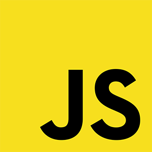

|  | ||
|---|---|---|
| HTML (от английского HyperText Markup Language) — это язык гипертекстовой разметки страницы. Он используется для того, чтобы дать браузеру понять, как нужно отображать загруженный сайт. | Javascript – это язык программирования, который добавляет интерактивность на ваш веб-сайт (например: игры, отклик при нажатии кнопок или при вводе данных в формы, динамические стили, анимация). | CSS (Cascading Style Sheets) — это код, который вы используете для стилизации вашей веб-страницы. Основы CSS помогут вам понять, что вам нужно для начала работы. |